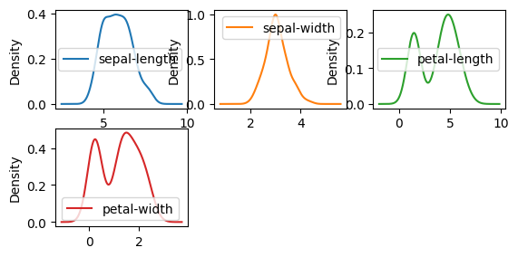
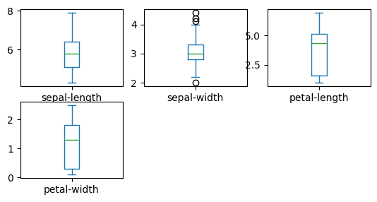
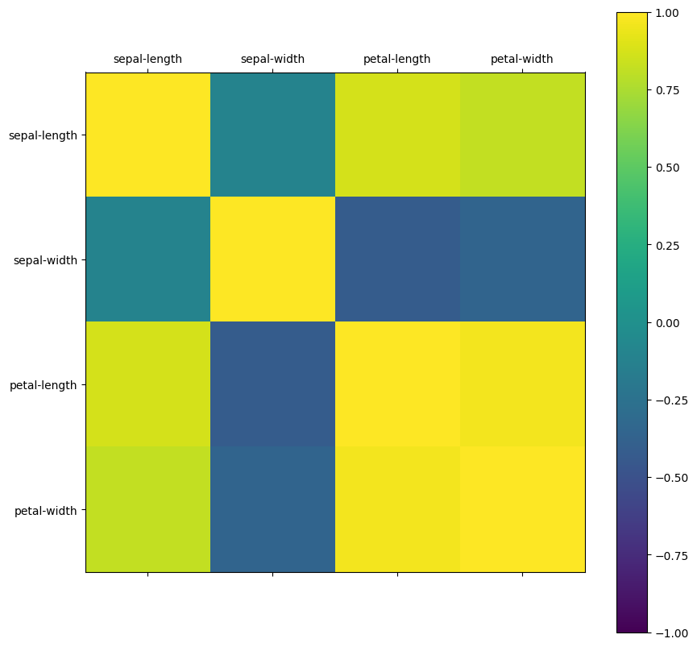
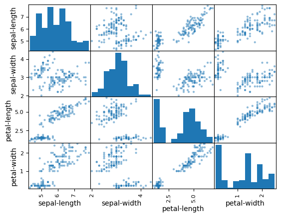
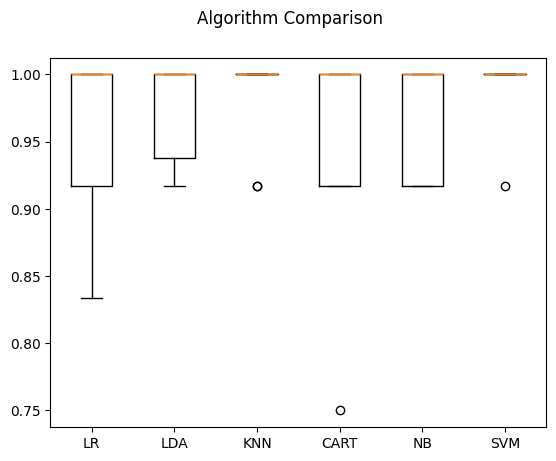

Iris Species#
Classify iris plants into three species in this classic dataset
# 1. Prepare Problem
# a) Load libraries
from pandas import read_csv
import pandas as pd
import numpy as np
from pandas.plotting import scatter_matrix
from matplotlib import pyplot
from sklearn.model_selection import train_test_split
from sklearn.model_selection import KFold
from sklearn.model_selection import cross_val_score
from sklearn.metrics import classification_report
from sklearn.metrics import confusion_matrix
from sklearn.metrics import accuracy_score
from sklearn.linear_model import LogisticRegression
from sklearn.tree import DecisionTreeClassifier
from sklearn.neighbors import KNeighborsClassifier
from sklearn.discriminant_analysis import LinearDiscriminantAnalysis
from sklearn.naive_bayes import GaussianNB
from sklearn.svm import SVC
# b) Load dataset
filename = 'datasets/Iris.csv'
names = ['sepal-length', 'sepal-width', 'petal-length', 'petal-width', 'class']
dataset = read_csv(filename, names=names, skiprows=1)
dataset.head(20)
| sepal-length | sepal-width | petal-length | petal-width | class | |
|---|---|---|---|---|---|
| 1 | 5.1 | 3.5 | 1.4 | 0.2 | Iris-setosa |
| 2 | 4.9 | 3.0 | 1.4 | 0.2 | Iris-setosa |
| 3 | 4.7 | 3.2 | 1.3 | 0.2 | Iris-setosa |
| 4 | 4.6 | 3.1 | 1.5 | 0.2 | Iris-setosa |
| 5 | 5.0 | 3.6 | 1.4 | 0.2 | Iris-setosa |
| 6 | 5.4 | 3.9 | 1.7 | 0.4 | Iris-setosa |
| 7 | 4.6 | 3.4 | 1.4 | 0.3 | Iris-setosa |
| 8 | 5.0 | 3.4 | 1.5 | 0.2 | Iris-setosa |
| 9 | 4.4 | 2.9 | 1.4 | 0.2 | Iris-setosa |
| 10 | 4.9 | 3.1 | 1.5 | 0.1 | Iris-setosa |
| 11 | 5.4 | 3.7 | 1.5 | 0.2 | Iris-setosa |
| 12 | 4.8 | 3.4 | 1.6 | 0.2 | Iris-setosa |
| 13 | 4.8 | 3.0 | 1.4 | 0.1 | Iris-setosa |
| 14 | 4.3 | 3.0 | 1.1 | 0.1 | Iris-setosa |
| 15 | 5.8 | 4.0 | 1.2 | 0.2 | Iris-setosa |
| 16 | 5.7 | 4.4 | 1.5 | 0.4 | Iris-setosa |
| 17 | 5.4 | 3.9 | 1.3 | 0.4 | Iris-setosa |
| 18 | 5.1 | 3.5 | 1.4 | 0.3 | Iris-setosa |
| 19 | 5.7 | 3.8 | 1.7 | 0.3 | Iris-setosa |
| 20 | 5.1 | 3.8 | 1.5 | 0.3 | Iris-setosa |
## 2. Summarize Data
# a) Descriptive statistics
description = dataset.describe()
print(description)
sepal-length sepal-width petal-length petal-width
count 150.000000 150.000000 150.000000 150.000000
mean 5.843333 3.054000 3.758667 1.198667
std 0.828066 0.433594 1.764420 0.763161
min 4.300000 2.000000 1.000000 0.100000
25% 5.100000 2.800000 1.600000 0.300000
50% 5.800000 3.000000 4.350000 1.300000
75% 6.400000 3.300000 5.100000 1.800000
max 7.900000 4.400000 6.900000 2.500000
outcome = dataset.groupby('class').size()
print(outcome)
class
Iris-setosa 50
Iris-versicolor 50
Iris-virginica 50
dtype: int64
numeric_columns = dataset.select_dtypes(include=[np.number]).columns
correlations = dataset[numeric_columns].corr()
print(correlations)
sepal-length sepal-width petal-length petal-width
sepal-length 1.000000 -0.109369 0.871754 0.817954
sepal-width -0.109369 1.000000 -0.420516 -0.356544
petal-length 0.871754 -0.420516 1.000000 0.962757
petal-width 0.817954 -0.356544 0.962757 1.000000
skew = dataset[numeric_columns].skew()
print(skew)
skew.plot(kind='bar')
pyplot.show()
sepal-length 0.314911
sepal-width 0.334053
petal-length -0.274464
petal-width -0.104997
dtype: float64
# b) Data visualizations
fig = pyplot.figure(figsize=(10, 10))
dataset.hist(layout=(3, 3))
pyplot.tight_layout(pad=0.4, w_pad=0.5, h_pad=1.0)
pyplot.show()
<Figure size 1000x1000 with 0 Axes>
dataset.plot(kind="density", subplots=True, layout=(3, 3), sharex=False)
pyplot.show()

dataset.plot(kind="box", subplots=True, layout=(3, 3), sharex=False, sharey=False)
pyplot.show()

correlation_matrix = dataset[numeric_columns].corr()
names = dataset.columns[0:4]
fig = pyplot.figure(figsize=(10, 10))
ax = fig.add_subplot(111)
cax = ax.matshow(correlation_matrix, vmin=-1, vmax=1)
fig.colorbar(cax)
ticks = np.arange(0, len(names), 1)
ax.set_xticks(ticks)
ax.set_yticks(ticks)
ax.set_xticklabels(names)
ax.set_yticklabels(names)
pyplot.show()

scatter_matrix(dataset)
pyplot.show()

# 3. Evaluate Algorithms
# a) Split-out validation dataset
# b) Test options and evaluation metric
# c) Spot Check Algorithms
X = dataset.iloc[:, 0:4].values
y = dataset.iloc[:, 4].values
validation_size = 0.2
seed = 7
X_train, X_validation, Y_train, Y_validation = train_test_split(X, y, test_size=validation_size, random_state=seed)
models = []
models.append(('LR', LogisticRegression(solver='liblinear')))
models.append(('LDA', LinearDiscriminantAnalysis()))
models.append(('KNN', KNeighborsClassifier()))
models.append(('CART', DecisionTreeClassifier()))
models.append(('NB', GaussianNB()))
models.append(('SVM', SVC(gamma='auto')))
results = []
names = []
for name, model in models:
kfold = KFold(n_splits=10, random_state=seed, shuffle=True)
cv_results = cross_val_score(model, X_train, Y_train, cv=kfold, scoring='accuracy')
results.append(cv_results)
names.append(name)
msg = "%s: %f (%f)" % (name, cv_results.mean(), cv_results.std())
print(msg)
LR: 0.958333 (0.055902)
LDA: 0.975000 (0.038188)
KNN: 0.983333 (0.033333)
CART: 0.950000 (0.076376)
NB: 0.966667 (0.040825)
SVM: 0.991667 (0.025000)
# d) Compare Algorithms
fig = pyplot.figure()
fig.suptitle('Algorithm Comparison')
ax = fig.add_subplot(111)
pyplot.boxplot(results)
ax.set_xticklabels(names)
pyplot.show()

# 4. Finalize Model
# a) Predictions on validation dataset
knn = KNeighborsClassifier()
knn.fit(X_train, Y_train)
predictions = knn.predict(X_validation)
print(accuracy_score(Y_validation, predictions))
print(confusion_matrix(Y_validation, predictions))
print(classification_report(Y_validation, predictions))
0.9
[[ 7 0 0]
[ 0 11 1]
[ 0 2 9]]
precision recall f1-score support
Iris-setosa 1.00 1.00 1.00 7
Iris-versicolor 0.85 0.92 0.88 12
Iris-virginica 0.90 0.82 0.86 11
accuracy 0.90 30
macro avg 0.92 0.91 0.91 30
weighted avg 0.90 0.90 0.90 30